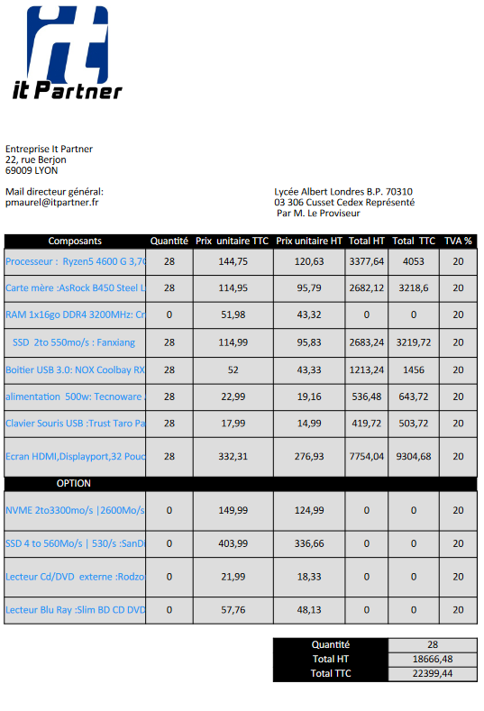
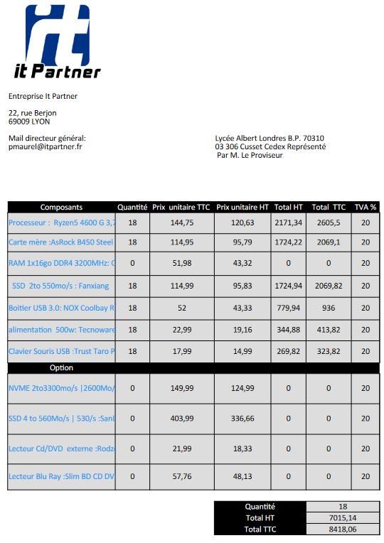
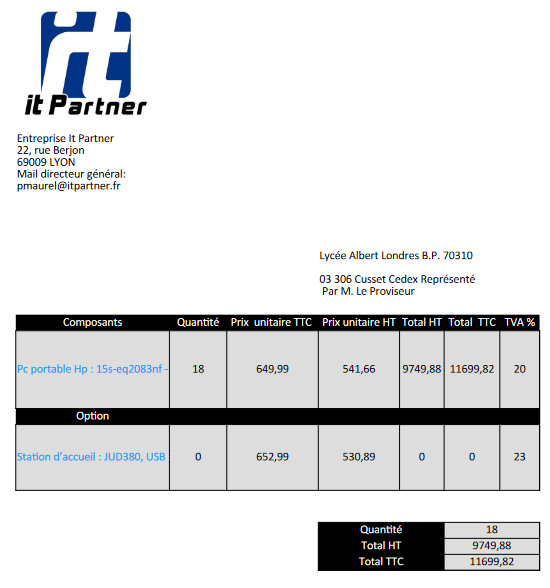

appel d'offres pc fixes et portables
Contexte :
Cet AP a été réalisé à 2 et nous avions comme objectifs :
- Analyser les demandes
- Proposer un devis contenant les ordinateurs et leurs options
- Réaliser un argumentaire de choix
- Faire une documentation technique des solutions
Nous étions des employés de chez IT Partner et nous devions réaliser 3 ordinateurs(2 fixes et 1 portable) qui avait chacun des critères spécifique. Pour cela nous devions trouver sur internet les composants des ordinateurs fixes et vérifier leurs compatibilités et le meilleur qualité prix. Et pour l'ordinateur portable trouver celui qui respecte le mieux la demande.
Après avoir trouvé les composant nous devions créer un devis fonctionnel (avec formule). Un oral final a eu lieu pour expliquer nos choix pour chaque composant.



Environnement technologique :
- internet (site pour les recherches des composants)
- libre office (calc/writter)
compétence mobilisée :
- B1.1.2 : Exploiter des référentiels, normes et standards adoptés par le prestataire informatique
la gestion de composant compatible entre eux et conforme aux normes actuelles.
- B1.2.2 : Traiter des demandes concernant les services réseau et système, applicatifs
Nous avons pu faire le choix de 3 ordinateurs qui était conforme à la demande tout en ayant un rapport qualité prix assez correcte.